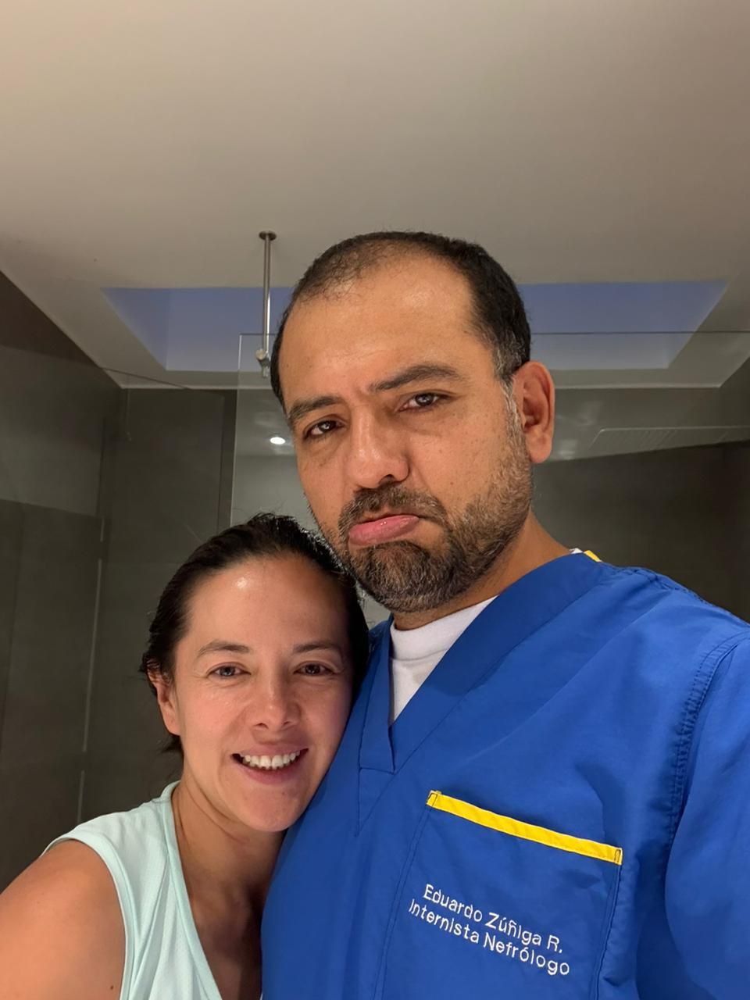
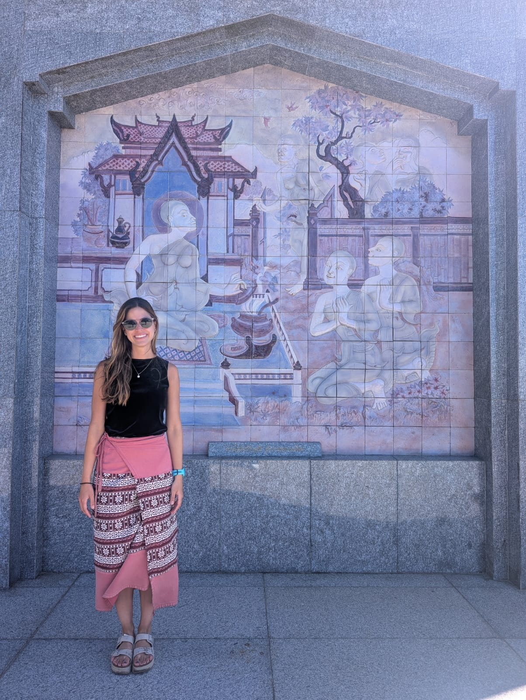

Ultrasonografía a la Cabecera del Paciente para Nefrólogos
Curso práctico de 2 días sobre ultrasonografía clínica aplicada a la nefrología, estructurado según el modelo Ten Steps to Complex Learning.
Keywords
nefrología, ultrasonografía, POCUS, educación médica, formación clínica
🩺 Curso de Ultrasonografía a la Cabecera del Paciente para Nefrólogos
📍 Lugar: Fundación Cardioinfantil, Bogotá, Colombia
📅 Fecha: 23 y 30 de agosto 2025
⏱️ Duración: 2 días
👨⚕️ Dirigido a: Nefrólogos clínicos y en formación
🌐 Modalidad: Presencial – con acceso a material digital complementario
🎯 Objetivos de Aprendizaje
Al finalizar el curso, los participantes serán capaces de:
- Identificar estructuras anatómicas clave en el examen renal, vesical y vascular con ultrasonido.
- Integrar hallazgos ecográficos a la toma de decisiones clínicas en el contexto nefrológico.
- Aplicar técnicas seguras de adquisición de imágenes en escenarios clínicos reales.
- Distinguir imágenes normales y patológicas mediante interpretación comparativa.
📅 Agenda del Curso
Día 1: VExUS, Ecografía Pulmonar y Ecocardiografía básica
Objetivos del Día
- Reconocer signos ecográficos de congestión venosa y pulmonar.
- Clasificar grados de congestión usando el score VExUS.
- Adquirir imágenes básicas: PLAX, PSAX, apical 4C.
- Integrar hallazgos en la toma de decisiones clínicas.
Cronograma
| Hora | Actividad | Estrategia Pedagógica |
|---|---|---|
| 08:00 – 08:30 | Repaso grupal de esquemas de VExUS y B-lines desde memoria | Repetición espaciada + activación memoria |
| 08:30 – 09:00 | Quiz + discusión en parejas | Autoevaluación + retroalimentación |
| 09:00 – 11:00 | Práctica guiada en estaciones (VExUS + pulmón) | Visuospatial sketchpad + guía supervisada |
| 11:00 – 11:30 | Discusión de caso clínico interactivo | Elaboración creciente |
| 11:30 – 12:00 | Revisión de caso clínico propio | Transferencia contextual |
| 13:00 - 13:30 | Repaso grupal de los hallazgos en ecocardiograma | Repetición espaciada + activación memoria |
| 13:30 - 14:00 | Videos cortos: hallazgos normales vs. patológicos | Comparación dirigida |
Día 2: Ecografia renal y del acceso vascular
Objetivos del Día
- Adquirir imágenes básicas: Riñónes, vejiga y modo B fístula AV
- Reconocer alteraciones al examen fisico de la fístula AV
- Adquirir imagenes adecuadas en Doppler espectral de la fístula AV
- Integrar hallazgos en la toma de decisiones clínicas.
Cronograma
| Hora | Actividad | Estrategia Pedagógica |
|---|---|---|
| 08:00 – 08:30 | Revisión imágenes normales en ultrasnografia renal y fístula AV | Reconocimiento visual |
| 08:30 – 09:00 | Videos cortos: hallazgos normales vs. patológicos | Comparación dirigida |
| 09:00 – 11:00 | Práctica guiada con supervisión directa (estaciones) | Carga cognitiva distribuida |
| 11:00 – 11:30 | Caso clínico complejo ( disfunción fistula AV) | Toma de decisiones clínicas |
| 11:30 – 12:00 | Quiz final + retroalimentación + cierre | Evaluación sumativa + reflexión |
📚 Recursos Pre-curso
Te recomendamos revisar antes del curso:
- Guía rápida de principios de US renal (PDF)
- Video: Cómo sostener el transductor correctamente (YouTube)
- Artículo: POCUS en nefrología – revisión actual
🧑🏫 Instructores

